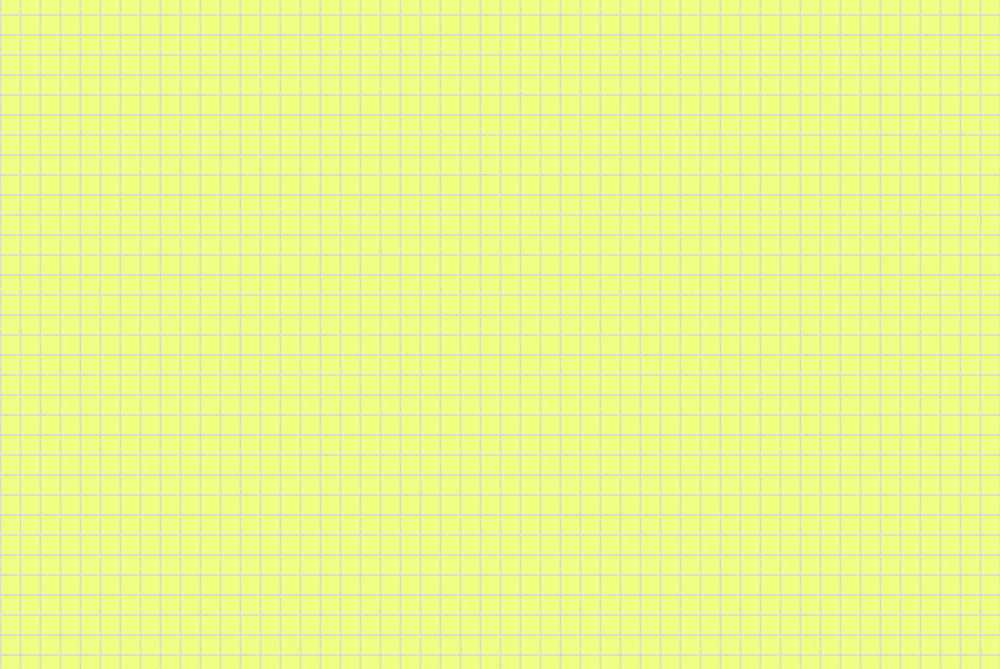
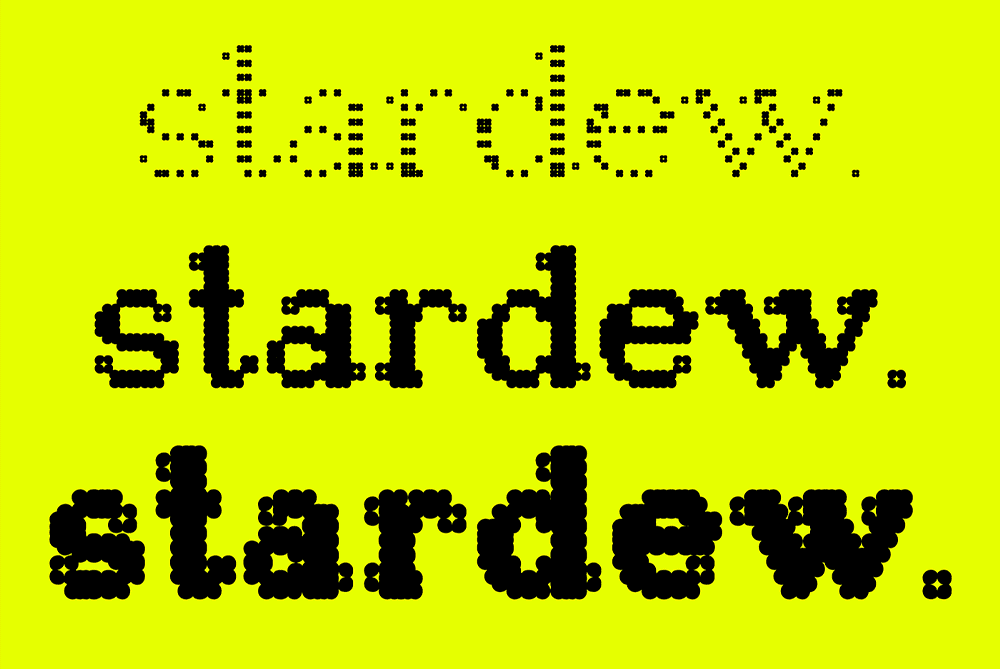
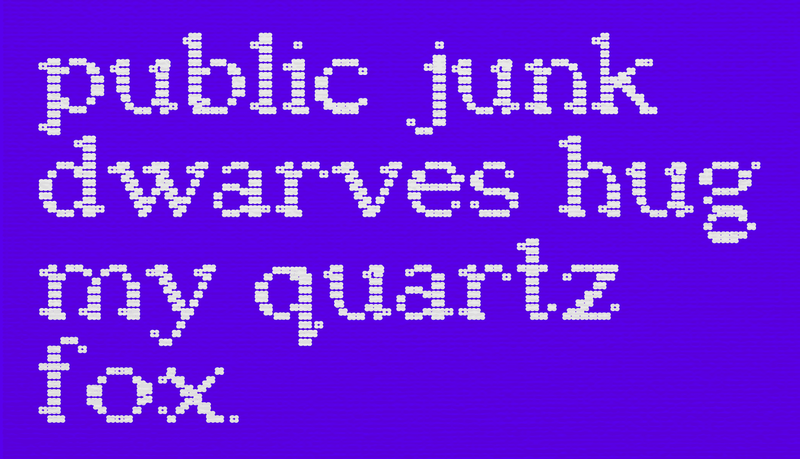
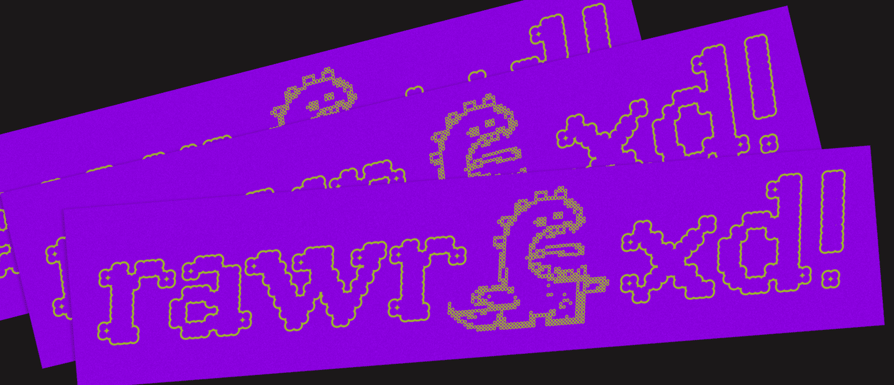

Stardew Typeface
(type design) (creative coding) (web design)
In → Fall 2023
Under → Tobias Holzmann
Try it Out!Under → Tobias Holzmann
Stardew is a bitmap variable display serif made using Glyphs. It was born from a curiosity about combining traditional design with technology, aiming to create an interplay between pixel & serif typography. Interested in how a grid & symbol could reimagine the nature of serifs and create a visual narrative, Stardew uses a flower-like pixel to form its characters. The typeface comes with different weights & widths that resemble flowers blooming.


a b c d e f g
h i j k l m n
o p q r s t u
v w x y z
. ! ? , ; : /
'"- –



